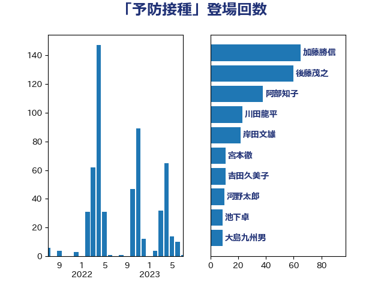

単語「予防接種」

| 加藤勝信 | 自由民主党 | 65 回 |
| 後藤茂之 | 自由民主党 | 60 回 |
| 阿部知子 | 立憲民主党 | 38 回 |
| 川田龍平 | 立憲民主党 | 23 回 |
| 岸田文雄 | 自由民主党 | 22 回 |
| 宮本徹 | 日本共産党 | 11 回 |
| 吉田久美子 | 公明党 | 11 回 |
| 河野太郎 | 自由民主党 | 10 回 |
| 池下卓 | 日本維新の会 | 9 回 |
| 大島九州男 | れいわ新選組 | 9 回 |
| 長妻昭 | 立憲民主党 | 8 回 |
| 田村智子 | 日本共産党 | 7 回 |
| 仁木博文 | 無所属 | 7 回 |
| 野間健 | 立憲民主党 | 6 回 |
| 堀内詔子 | 自由民主党 | 6 回 |
| 本田顕子 | 自由民主党 | 5 回 |
| 友納理緒 | 自由民主党 | 5 回 |
| 倉林明子 | 日本共産党 | 5 回 |
| 高階恵美子 | 自由民主党 | 4 回 |
| 阿部弘樹 | 日本維新の会 | 4 回 |
| 西村康稔 | 自由民主党 | 4 回 |
| 田中健 | 国民民主党 | 4 回 |
| 吉田とも代 | 日本維新の会 | 4 回 |
| 古屋範子 | 公明党 | 4 回 |
| 伊佐進一 | 公明党 | 4 回 |
| 三ッ林裕巳 | 自由民主党 | 4 回 |
| 蓮舫 | 立憲民主党 | 3 回 |
| 芳賀道也 | 国民民主党 | 3 回 |
| 福重隆浩 | 公明党 | 3 回 |
| 石井苗子 | 日本維新の会 | 3 回 |
| 田島麻衣子 | 立憲民主党 | 3 回 |
| 伊藤孝恵 | 国民民主党 | 3 回 |
| 中島克仁 | 立憲民主党 | 3 回 |
| 青山大人 | 立憲民主党 | 2 回 |
| 田村まみ | 国民民主党 | 2 回 |
| 牧島かれん | 自由民主党 | 2 回 |
| 梅村聡 | 日本維新の会 | 2 回 |
| 柳ヶ瀬裕文 | 日本維新の会 | 2 回 |
| 林芳正 | 自由民主党 | 2 回 |
| 星北斗 | 自由民主党 | 2 回 |
| 島村大 | 自由民主党 | 2 回 |
| 小林史明 | 自由民主党 | 2 回 |
| 古賀篤 | 自由民主党 | 2 回 |
| 伊藤渉 | 公明党 | 2 回 |
| こやり隆史 | 自由民主党 | 2 回 |
| 菅家一郎 | 自由民主党 | 1 回 |
| 竹内真二 | 公明党 | 1 回 |
| 神谷宗幣 | 参政党 | 1 回 |
| 石原宏高 | 自由民主党 | 1 回 |
| 生稲晃子 | 自由民主党 | 1 回 |
| 猪瀬直樹 | 日本維新の会 | 1 回 |
| 櫻井充 | 自由民主党 | 1 回 |
| 末松信介 | 自由民主党 | 1 回 |
| 早稲田ゆき | 立憲民主党 | 1 回 |
| 川合孝典 | 国民民主党 | 1 回 |
| 岬麻紀 | 日本維新の会 | 1 回 |
| 岡本あき子 | 立憲民主党 | 1 回 |
| 山際大志郎 | 自由民主党 | 1 回 |
| 山田勝彦 | 立憲民主党 | 1 回 |
| 山本博司 | 公明党 | 1 回 |
| 山口俊一 | 自由民主党 | 1 回 |
| 小川淳也 | 立憲民主党 | 1 回 |
| 天畠大輔 | れいわ新選組 | 1 回 |
| 塩川鉄也 | 日本共産党 | 1 回 |
| 吉田統彦 | 立憲民主党 | 1 回 |
| 吉川沙織 | 立憲民主党 | 1 回 |
| 佐藤英道 | 公明党 | 1 回 |
| 井坂信彦 | 立憲民主党 | 1 回 |